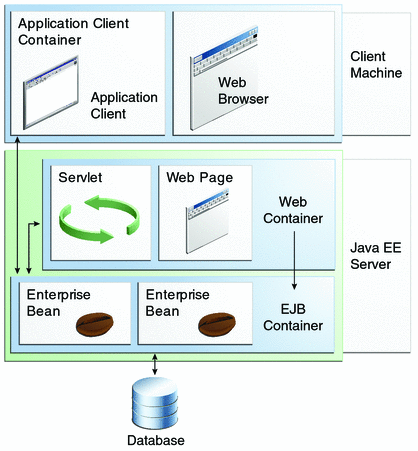
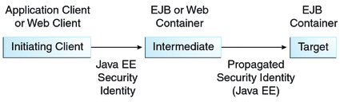

Securing Enterprise Beans
Enterprise beans are Java EE components that implement EJB technology. Enterprise beans run in the EJB container, a runtime environment within the GlassFish Server. Although transparent to the application developer, the EJB container provides system-level services, such as transactions and security to its enterprise beans, which form the core of transactional Java EE applications.
Enterprise bean methods can be secured in either of the following ways:
Declarative security (preferred): Expresses an application component’s security requirements using either deployment descriptors or annotations. The presence of an annotation in the business method of an enterprise bean class that specifies method permissions is all that is needed for method protection and authentication in some situations. This section discusses this simple and efficient method of securing enterprise beans.
Because of some limitations to the simplified method of securing enterprise beans, you would want to continue to use the deployment descriptor to specify security information in some instances. An authentication mechanism must be configured on the server for the simple solution to work. Basic authentication is the GlassFish Server’s default authentication method.
This tutorial explains how to invoke user name/password authentication of authorized users by decorating the enterprise application’s business methods with annotations that specify method permissions.
To make the deployer’s task easier, the application developer can define security roles. A security role is a grouping of permissions that a given type of application users must have in order to successfully use the application. For example, in a payroll application, some users will want to view their own payroll information (employee), some will need to view others’ payroll information (manager), and some will need to be able to change others’ payroll information (payrollDept). The application developer would determine the potential users of the application and which methods would be accessible to which users. The application developer would then decorate classes or methods of the enterprise bean with annotations that specify the types of users authorized to access those methods. Using annotations to specify authorized users is described in Specifying Authorized Users by Declaring Security Roles.
When one of the annotations is used to define method permissions, the deployment system will automatically require user name/password authentication. In this type of authentication, a user is prompted to enter a user name and password, which will be compared against a database of known users. If the user is found and the password matches, the roles that the user is assigned will be compared against the roles that are authorized to access the method. If the user is authenticated and found to have a role that is authorized to access that method, the data will be returned to the user.
Using declarative security is discussed in Securing an Enterprise Bean Using Declarative Security.
Programmatic security: For an enterprise bean, code embedded in a business method that is used to access a caller’s identity programmatically and that uses this information to make security decisions. Programmatic security is useful when declarative security alone is not sufficient to express the security model of an application.
In general, security management should be enforced by the container in a manner that is transparent to the enterprise beans’ business methods. The programmatic security APIs described in this chapter should be used only in the less frequent situations in which the enterprise bean business methods need to access the security-context information, such as when you want to grant access based on the time of day or other nontrivial condition checks for a particular role.
Programmatic security is discussed in Securing an Enterprise Bean Programmatically.
Some of the material in this chapter assumes that you have already read Chapter 22, Enterprise Beans, Chapter 23, Getting Started with Enterprise Beans, and Chapter 39, Introduction to Security in the Java EE Platform.
As mentioned earlier, enterprise beans run in the EJB container, a runtime environment within the GlassFish Server, as shown in Figure 41-1.
Figure 41-1 Java EE Server and Containers
This section discusses securing a Java EE application where one or more modules, such as EJB JAR files, are packaged into an EAR file, the archive file that holds the application. Security annotations will be used in the Java programming class files to specify authorized users and basic, or user name/password, authentication.
Enterprise beans often provide the business logic of a web application. In these cases, packaging the enterprise bean within the web application’s WAR module simplifies deployment and application organization. Enterprise beans may be packaged within a WAR module as Java class files or within a JAR file that is bundled within the WAR module. When a servlet or JavaServer Faces page handles the web front end and the application is packaged into a WAR module as a Java class file, security for the application can be handled in the application’s web.xml file. The EJB in the WAR file can have its own deployment descriptor, ejb-jar.xml, if required. Securing web applications using web.xml is discussed in Chapter 40, Getting Started Securing Web Applications.
The following sections describe declarative and programmatic security mechanisms that can be used to protect enterprise bean resources. The protected resources include enterprise bean methods that are called from application clients, web components, or other enterprise beans.
For more information on this topic, read the Enterprise JavaBeans 3.1 specification. This document can be downloaded from http://jcp.org/en/jsr/detail?id=318. Chapter 17 of this specification, “Security Management,” discusses security management for enterprise beans.
Securing an Enterprise Bean Using Declarative Security
Declarative security enables the application developer to specify which users are authorized to access which methods of the enterprise beans and to authenticate these users with basic, or username-password, authentication. Frequently, the person who is developing an enterprise application is not the same person who is responsible for deploying the application. An application developer who uses declarative security to define method permissions and authentications mechanisms is passing along to the deployer a security view of the enterprise beans contained in the EJB JAR. When a security view is passed on to the deployer, he or she uses this information to define method permissions for security roles. If you don’t define a security view, the deployer will have to determine what each business method does to determine which users are authorized to call each method.
A security view consists of a set of security roles, a semantic grouping of permissions that a given type of users of an application must have to successfully access the application. Security roles are meant to be logical roles, representing a type of user. You can define method permissions for each security role. A method permission is a permission to invoke a specified group of methods of an enterprise bean’s business interface, home interface, component interface, and/or web service endpoints. After method permissions are defined, user name/password authentication will be used to verify the identity of the user.
It is important to keep in mind that security roles are used to define the logical security view of an application. They should not be confused with the user groups, users, principals, and other concepts that exist in the GlassFish Server. An additional step is required to map the roles defined in the application to users, groups, and principals that are the components of the user database in the file realm of the GlassFish Server. These steps are outlined in Mapping Roles to Users and Groups.
The following sections show how an application developer uses declarative security to either secure an application or to create a security view to pass along to the deployer.
Specifying Authorized Users by Declaring Security Roles
This section discusses how to use annotations to specify the method permissions for the methods of a bean class. For more information on these annotations, refer to the Common Annotations for the Java Platform specification at http://jcp.org/en/jsr/detail?id=250.
Method permissions can be specified on the class, the business methods of the class, or both. Method permissions can be specified on a method of the bean class to override the method permissions value specified on the entire bean class. The following annotations are used to specify method permissions:
@DeclareRoles: Specifies all the roles that the application will use, including roles not specifically named in a @RolesAllowed annotation. The set of security roles the application uses is the total of the security roles defined in the @DeclareRoles and @RolesAllowed annotations.
The @DeclareRoles annotation is specified on a bean class, where it serves to declare roles that can be tested (for example, by calling isCallerInRole) from within the methods of the annotated class. When declaring the name of a role used as a parameter to the isCallerInRole(String roleName) method, the declared name must be the same as the parameter value.
The following example code demonstrates the use of the @DeclareRoles annotation:
@DeclareRoles("BusinessAdmin") public class Calculator { ... }The syntax for declaring more than one role is as shown in the following example:
@DeclareRoles({"Administrator", "Manager", "Employee"})@RolesAllowed("list-of-roles"): Specifies the security roles permitted to access methods in an application. This annotation can be specified on a class or on one or more methods. When specified at the class level, the annotation applies to all methods in the class. When specified on a method, the annotation applies to that method only and overrides any values specified at the class level.
To specify that no roles are authorized to access methods in an application, use the @DenyAll annotation. To specify that a user in any role is authorized to access the application, use the @PermitAll annotation.
When used in conjunction with the @DeclareRoles annotation, the combined set of security roles is used by the application.
The following example code demonstrates the use of the @RolesAllowed annotation:
@DeclareRoles({"Administrator", "Manager", "Employee"}) public class Calculator { @RolesAllowed("Administrator") public void setNewRate(int rate) { ... } }@PermitAll: Specifies that all security roles are permitted to execute the specified method or methods. The user is not checked against a database to ensure that he or she is authorized to access this application.
This annotation can be specified on a class or on one or more methods. Specifying this annotation on the class means that it applies to all methods of the class. Specifying it at the method level means that it applies to only that method.
The following example code demonstrates the use of the @PermitAll annotation:
import javax.annotation.security.*; @RolesAllowed("RestrictedUsers") public class Calculator { @RolesAllowed("Administrator") public void setNewRate(int rate) { //... } @PermitAll public long convertCurrency(long amount) { //... } }@DenyAll: Specifies that no security roles are permitted to execute the specified method or methods. This means that these methods are excluded from execution in the Java EE container.
The following example code demonstrates the use of the @DenyAll annotation:
import javax.annotation.security.*; @RolesAllowed("Users") public class Calculator { @RolesAllowed("Administrator") public void setNewRate(int rate) { //... } @DenyAll public long convertCurrency(long amount) { //... } }
The following code snippet demonstrates the use of the @DeclareRoles annotation with the isCallerInRole method. In this example, the @DeclareRoles annotation declares a role that the enterprise bean PayrollBean uses to make the security check by using isCallerInRole("payroll") to verify that the caller is authorized to change salary data:
@DeclareRoles("payroll")
@Stateless public class PayrollBean implements Payroll {
@Resource SessionContext ctx;
public void updateEmployeeInfo(EmplInfo info) {
oldInfo = ... read from database;
// The salary field can be changed only by callers
// who have the security role "payroll"
Principal callerPrincipal = ctx.getCallerPrincipal();
if (info.salary != oldInfo.salary && !ctx.isCallerInRole("payroll")) {
throw new SecurityException(...);
}
...
}
...
}The following example code illustrates the use of the @RolesAllowed annotation:
@RolesAllowed("admin")
public class SomeClass {
public void aMethod () {...}
public void bMethod () {...}
...
}
@Stateless public class MyBean extends SomeClass implements A {
@RolesAllowed("HR")
public void aMethod () {...}
public void cMethod () {...}
...
}In this example, assuming that aMethod, bMethod, and cMethod are methods of business interface A, the method permissions values of methods aMethod and bMethod are @RolesAllowed("HR") and @RolesAllowed("admin"), respectively. The method permissions for method cMethod have not been specified.
To clarify, the annotations are not inherited by the subclass itself. Instead, the annotations apply to methods of the superclass that are inherited by the subclass.
Specifying an Authentication Mechanism and Secure Connection
When method permissions are specified, basic user name/password authentication will be invoked by the GlassFish Server.
To use a different type of authentication or to require a secure connection using SSL, specify this information in an application deployment descriptor.
Securing an Enterprise Bean Programmatically
Programmatic security, code that is embedded in a business method, is used to access a caller’s identity programmatically and uses this information to make security decisions within the method itself.
Accessing an Enterprise Bean Caller’s Security Context
In general, security management should be enforced by the container in a manner that is transparent to the enterprise bean’s business methods. The security API described in this section should be used only in the less frequent situations in which the enterprise bean business methods need to access the security context information, such as when you want to restrict access to a particular time of day.
The javax.ejb.EJBContext interface provides two methods that allow the bean provider to access security information about the enterprise bean’s caller:
getCallerPrincipal, which allows the enterprise bean methods to obtain the current caller principal’s name. The methods might, for example, use the name as a key to information in a database.
The following code sample illustrates the use of the getCallerPrincipal method:
@Stateless public class EmployeeServiceBean implements EmployeeService { @Resource SessionContext ctx; @PersistenceContext EntityManager em; public void changePhoneNumber(...) { ... // obtain the caller principal. callerPrincipal = ctx.getCallerPrincipal(); // obtain the caller principal's name. callerKey = callerPrincipal.getName(); // use callerKey as primary key to find EmployeeRecord EmployeeRecord myEmployeeRecord = em.find(EmployeeRecord.class, callerKey); // update phone number myEmployeeRecord.setPhoneNumber(...); ... } }In this example, the enterprise bean obtains the principal name of the current caller and uses it as the primary key to locate an EmployeeRecord entity. This example assumes that application has been deployed such that the current caller principal contains the primary key used for the identification of employees (for example, employee number).
isCallerInRole, which the enterprise bean code can use to allow the bean provider/application developer to code the security checks that cannot be easily defined using method permissions. Such a check might impose a role-based limit on a request, or it might depend on information stored in the database.
The enterprise bean code can use the isCallerInRole method to test whether the current caller has been assigned to a given security role. Security roles are defined by the bean provider or the application assembler and are assigned by the deployer to principals or principal groups that exist in the operational environment.
The following code sample illustrates the use of the isCallerInRole method:
@Stateless public class PayrollBean implements Payroll { @Resource SessionContext ctx; public void updateEmployeeInfo(EmplInfo info) { oldInfo = ... read from database; // The salary field can be changed only by callers // who have the security role "payroll" if (info.salary != oldInfo.salary && !ctx.isCallerInRole("payroll")) { throw new SecurityException(...); } ... } ... }
You would use programmatic security in this way to dynamically control access to a method, for example, when you want to deny access except during a particular time of day. An example application that uses the getCallerPrincipal and isCallerInRole methods is described in The converter-secure Example: Securing an Enterprise Bean with Programmatic Security.
Propagating a Security Identity (Run-As)
You can specify whether a caller’s security identity should be used for the execution of specified methods of an enterprise bean or whether a specific run-as identity should be used. Figure 41-2 illustrates this concept.
Figure 41-2 Security Identity Propagation
In this illustration, an application client is making a call to an enterprise bean method in one EJB container. This enterprise bean method, in turn, makes a call to an enterprise bean method in another container. The security identity during the first call is the identity of the caller. The security identity during the second call can be any of the following options.
By default, the identity of the caller of the intermediate component is propagated to the target enterprise bean. This technique is used when the target container trusts the intermediate container.
A specific identity is propagated to the target enterprise bean. This technique is used when the target container expects access using a specific identity.
To propagate an identity to the target enterprise bean, configure a run-as identity for the bean, as described in Configuring a Component's Propagated Security Identity. Establishing a run-as identity for an enterprise bean does not affect the identities of its callers, which are the identities tested for permission to access the methods of the enterprise bean. The run-as identity establishes the identity that the enterprise bean will use when it makes calls.
The run-as identity applies to the enterprise bean as a whole, including all the methods of the enterprise bean’s business interface, local and remote interfaces, component interface, and web service endpoint interfaces, the message listener methods of a message-driven bean, the timeout method of an enterprise bean, and all internal methods of the bean that might be called in turn.
Configuring a Component’s Propagated Security Identity
You can configure an enterprise bean’s run-as, or propagated, security identity by using the @RunAs annotation, which defines the role of the application during execution in a Java EE container. The annotation can be specified on a class, allowing developers to execute an application under a particular role. The role must map to the user/group information in the container’s security realm. The @RunAs annotation specifies the name of a security role as its parameter.
Here is some example code that demonstrates the use of the @RunAs annotation.
@RunAs("Admin")
public class Calculator {
//....
}You will have to map the run-as role name to a given principal defined on the GlassFish Server if the given roles are associated with more than one user principal.
Trust between Containers
When an enterprise bean is designed so that either the original caller identity or a designated identity is used to call a target bean, the target bean will receive the propagated identity only. The target bean will not receive any authentication data.
There is no way for the target container to authenticate the propagated security identity. However, because the security identity is used in authorization checks (for example, method permissions or with the isCallerInRole method), it is vitally important that the security identity be authentic. Because no authentication data is available to authenticate the propagated identity, the target must trust that the calling container has propagated an authenticated security identity.
By default, the GlassFish Server is configured to trust identities that are propagated from different containers. Therefore, you do not need to take any special steps to set up a trust relationship.
Deploying Secure Enterprise Beans
The deployer is responsible for ensuring that an assembled application is secure after it has been deployed in the target operational environment. If a security view has been provided to the deployer through the use of security annotations and/or a deployment descriptor, the security view is mapped to the mechanisms and policies used by the security domain in the target operational environment, which in this case is the GlassFish Server. If no security view is provided, the deployer must set up the appropriate security policy for the enterprise bean application.
Deployment information is specific to a web or application server.